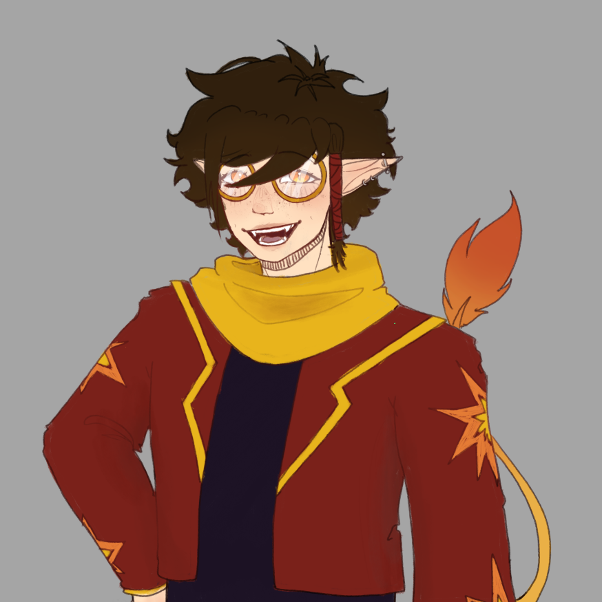
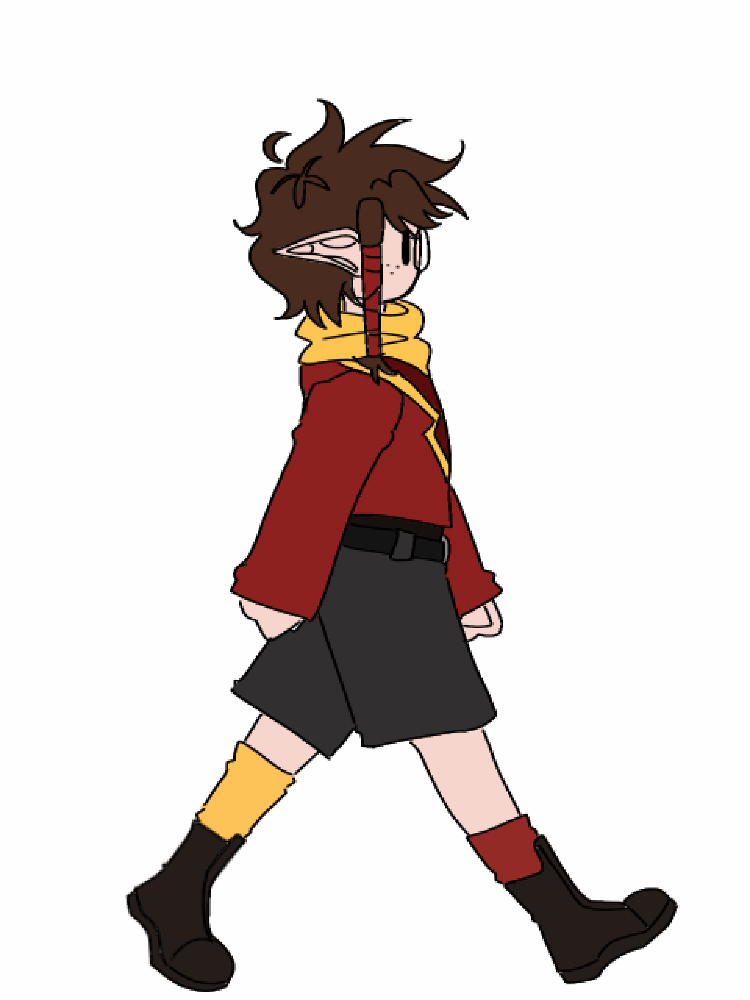
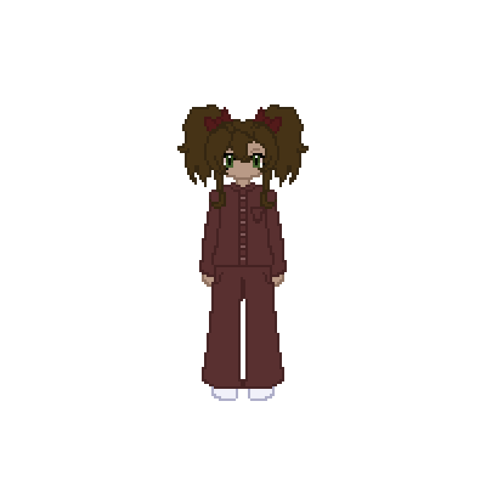
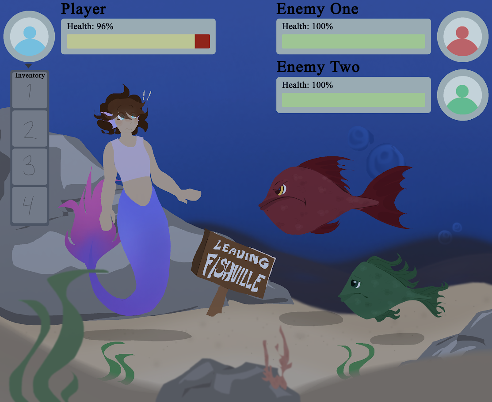

Home
Welcome to my portfolio! This page showcases projects I've done with Questar III, my parts in them(if they're in collaboration with others), and my art for solo projects. There are also a few personal examples of my own work linked in a seperate area..



